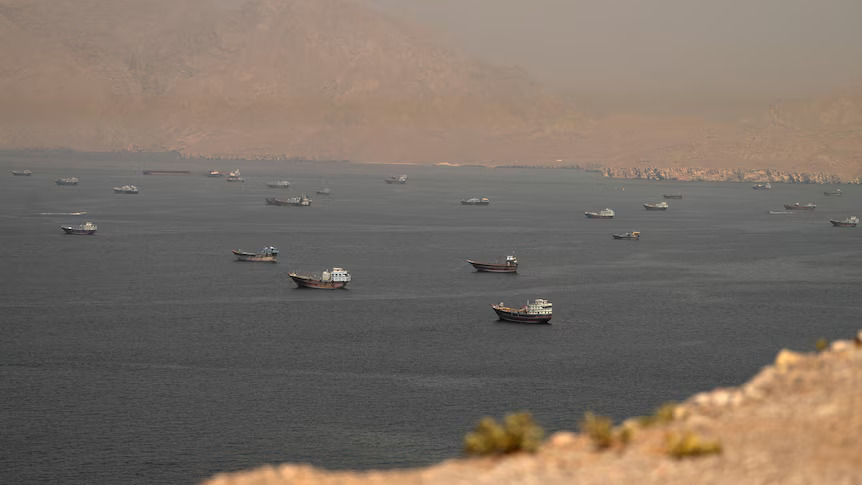
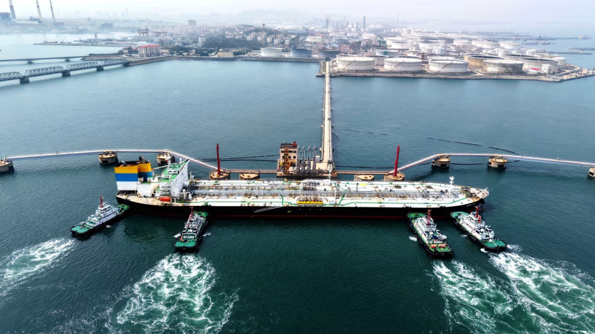
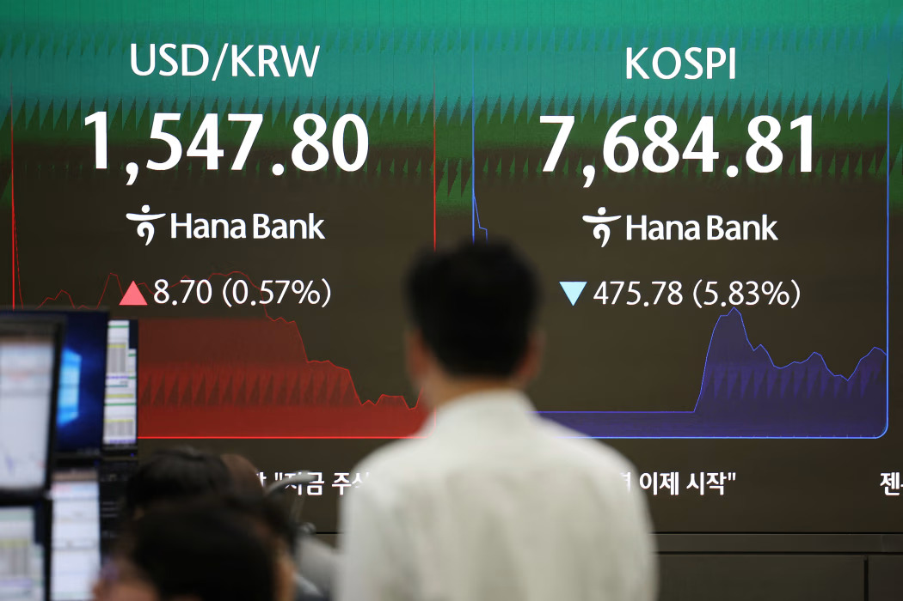

I’m an undergraduate studying Economics at Cornell University with interests in macroeconomics, financial markets, and investment research.
Growing up in Seoul, spending several years in Waterloo and Toronto, and now studying in the United States has made me curious about how events in one part of the world can shape economies and financial markets somewhere else.
I started this journal to connect what I learn in the classroom with what’s happening in the real world. More than anything, this is a personal record of my curiosity—a place to document what I learn, how my thinking evolves, and the milestones along my journey as an investor and student of the markets.


